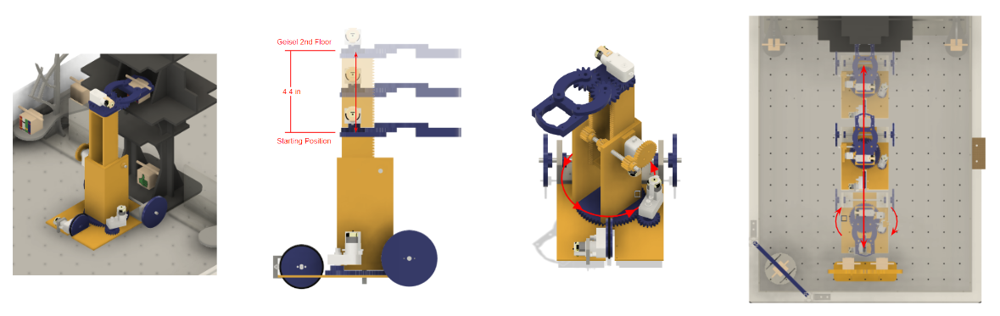
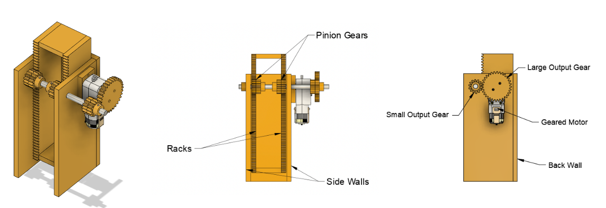
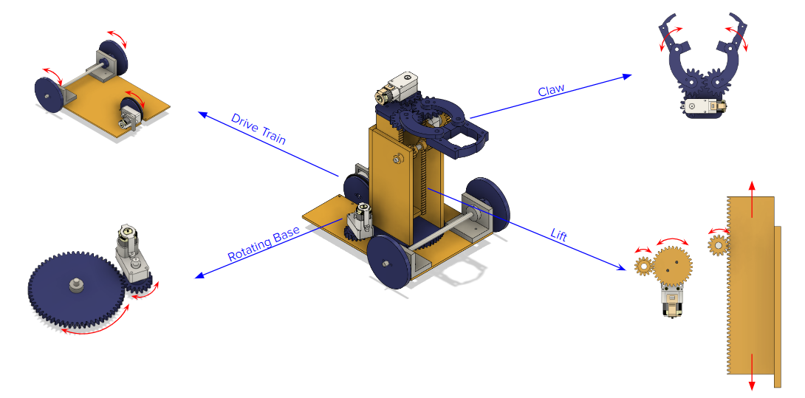

Introduction to Engineering Graphics and Design Robot Project
The Project
For the final of the MAE 3 Introduction to Engineering Graphics and Design course, teams of four had to build a robot that can lift small balls and blocks from 7 to 15 inches above the ground and move across a 27 inch x 35 inch area in 5 weeks. This project tested my engineering, leadership, communication, and organizational skills. My team’s robot had four powered components: a rotating base that rotates the lift and claw components, a three-wheel drivetrain, a claw for grasping objects, and a rack and pinion lift.
The Lift
The component of the robot that I was responsible for was the lift mechanism. During the early design stage, I found inspiration for a vertical lift from my time in my high school’s First Robotics Competition team. I wanted to design a mechanism that would be able to move a claw component at least 4 inches upwards within 2 seconds and also be able to adjust to any variable height between its resting position and 4 inches above the resting position. With these design requirements in mind, I chose a rack and pinion system for its robustness and efficiency. A large majority of the other robots in the class implemented an arm mechanism to lift objects, making my team’s robot starkly different in design and functionality. With small changes to the gear ratio for greater torque, the lift became one of the most reliable components of our robot. With my design, I was able to accomplish a factor of safety of 4.2. Furthermore, through quasi-static analysis, I determined that the maximum mass that the lift component could support at full height without jamming was 0.154 kg.
The Team Design Process
Assigning roles through the Gantt chart was paramount in ensuring that all team members were productive during their time in the design studio. The chart also helped my team set an order of magnitude in regards to what needed to be completed within the week. The design process began with three rough sketches from each member of the team. We utilized an FRDPARRC table to examine and evaluate each of our designs. By the first week we decided on a three-wheel drive robot with a rack and pinion lift upon a rotating base. We quickly began designing a concrete model in Fusion 360 and creating the prototype lift for the risk reduction test within the second and third week. The remaining time required the most collaboration and prioritization of tasks. While I completed constructing the rack and pinion lift, I helped my team members prepare their AutoCAD files for the LaserCAMM and drill holes in their components at the drill press. Overall, despite the numerous complications my team faced over the course of these 5 weeks, setting specific goals and adhering to the rigid schedule planned on our Gantt chart was vital toward the completion of the robot.
The Milestones
While each team had individual goals planned, all of the teams were required to meet weekly milestones. These milestones were often lofty goals that had to be completed in a short amount of time. The first milestone was a presentation of a risk reduction test on a singular styrofoam and acrylic component to the professor. During this presentation, my team explained the expected functionality of the robot and demonstrated my lift’s ability to elevate a mass of 0.25 kg. Soon after, we quickly had to complete the rest of the robot in order to score a singular point for the next milestone. Despite the claw mechanism not being fully functional, we were able to knock a block down using the lift and rotating base and earn a point. The final milestone was defeating a four-legged robot constructed by the teacher assistants called “the Golem”. After the addition and revision of numerous components on the drivetrain of the robot, my team successfully beat the Golem with a score of 2-1.